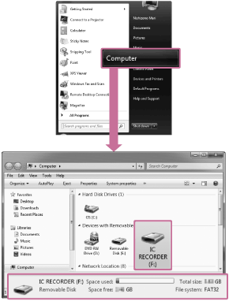
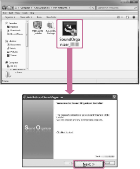

IC RecorderICD-PX333/PX333F
Installing Sound Organizer (for Windows only)
Note
-
When installing Sound Organizer, log in to an account with administrator privileges.
Also, if you are using Windows 7 or Windows 8 and the [User Account Control] screen appears, confirm the contents of the screen and then click [Yes] ([Continue] in the case of Windows Vista).
- Sound Organizer cannot be started by a user with limited privileges in Windows XP.
- To use the software update function in Windows XP, you must log on to an account with computer administrator privileges.
-
The Windows Media Format Runtime module is added by the installer of Sound Organizer. This module is not removed when Sound Organizer is uninstalled. However, it may not be installed if it has been preinstalled.
- The data in the content storage folders is not deleted when Sound Organizer is uninstalled.
- In an installation environment in which multiple operating systems are installed on one computer, do not install Sound Organizer in each of the operating systems. Doing so may result in data inconsistencies.
- Connect the IC recorder to the computer.
- Go to the [Start] menu, click [Computer] (or [My Computer]), and then double-click [IC RECORDER] - [FOR WINDOWS].

The display that appears on the computer screen differs depending on the version of the operating system you are using. Windows 7 is used as an example in this Help Guide.
- Double-click [SoundOrganizerInstaller_V140] (or [SoundOrganizerInstaller_V140.exe]).

Depending on the version of the operating system you are using, the preparations for setup (extract) may start automatically without any notice appearing on the screen.
In such a case, follow the instructions that appear on the screen.
- Make sure that you accept the terms of the license agreement, select [I accept the terms in the license agreement], and then click [Next].
- When the [Setup Type] window appears, select [Standard] or [Custom], and then click [Next].
Follow the instructions on the screen and set the installation settings when you select [Custom].
- When the [Ready to Install the Program] window appears, click [Install].
The installation starts.
- When [Sound Organizer has been installed successfully.] window appears, check [Launch Sound Organizer Now], and then click [Finish].
Note
- You may need to restart your computer after installing Sound Organizer.